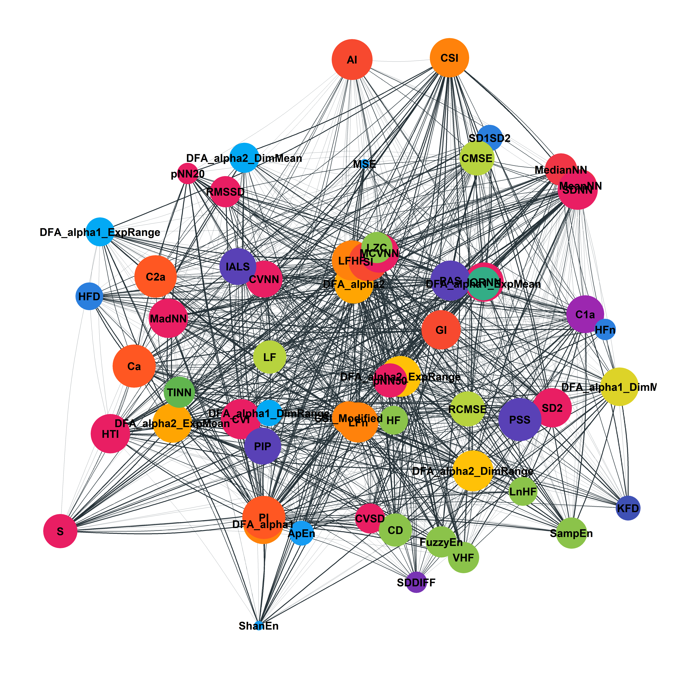

Conceptual vs. Observed Structure of Heart Rate Variability (HRV) Indices
Data Analysis
Introduction

Heart Rate Variability (HRV) can be estimated using a myriad of mathematical indices, for which the lack of comparison renders results’ interpretation and evaluation tedious. In this study, we assessed the relationship between 42 HRV metrics collected from Human recordings (n = 531) using various structure-analysis algorithms. We then applied a metaclustering approach that combines their results to obtain a robust and reliable view of the observed relationships. We found that HRV metrics can be clustered into 4 groups, representing …. From there, we derived recommendations on which indices to prioritize for parsimonious, yet comprehensive HRV-related data analysis and reporting.
Heart Rate Variability (HRV), reflecting the heart’s ability to effectively regulate and adapt to internal and external environmental changes, has been linked with many physical and mental health outcomes (forte2019heart?). Conventionally, the various indices used in the assessment of HRV were broadly categorized based on the nature of their mathematical approach, in categories including time-domain, frequency-domain, and nonlinear dynamics.
Time-domain analysis presents the simplest and most straightforward method of quantifying HRV from the original normal (i.e., excluding abnormal beats such as ectopic beats) heartbeat intervals, henceforth referred to as NN intervals. Some commonly derived indices include SDNN, the standard deviation of all NN intervals, SDSD, the standard deviation of differences between adjacent NN intervals, RMSSD, the root mean square of the sum of successive differences of NN intervals, and pNN50, the percentage of adjacent NN intervals separated by more than 50ms.
While time-domain methods offers computational ease, they are unable to distinguish between the contributions of sympathetic and parasympathetic branches. Frequency-domain analysis, on the other hand, targets the assessment of these different regulatory mechanisms by investigating how the HRV power spectrum distributes across different frequency bands. The low frequency (LF; 0.04–0.15Hz) and high frequency (HF; 0.15–0.4 Hz) components, the two main indicators of ANS activity (acharya2006heart?), predominantly reflect sympathetic and parasympathetic activity respectively. The other two components measured at very low frequencies (VLF; 0.0033–0.04 Hz) and ultra low frequencies (ULF low frequency \(\leq\) 0.003 Hz) are less clear in regards to their associated physiological mechanisms (kleiger2005heart?), though some evidence has linked the former to long-term regulatory mechanisms (akselrod1981power?) and the latter to circadian and metabolic activity (shaffer2014healthy?). Other indices that fall under the frequency domain include derivatives of the aforementioned components, such as the ratio of LF to HF (LF/HF) power and their normalized (e.g., LFn, HFn) and natural logarithmic variants (e.g., LnHF).
Finally, drawn from concepts of non-linear dynamics and chaos theory (golberger1996non?), non-linear analysis was later introduced to better characterize the complex physiological mechanisms underlying HRV regulation. Prominent indices include measures obtained from a Poincaré plot where an ellipse is fitted to a scatterplot of each NN interval against its preceding one, specifically, the standard deviation of the short-term (SD1; width of ellipse) and long-term (SD2 ; length of ellipse) NN interval variability (brennan2001existing?) as well as its corresponding ratio (SD1/SD2). Other non-linear indices that fall under this category, such as Detrended Fluctuation Analysis (DFA), multi-fractal DFA (MF-DFA) and correlation dimension (CD) account for the fractal properties of HRV, while entropy measures like approximate entropy (ApEn), sample entropy (SampEn), and multiscale entropy (MSE) quantify the amount of regularity in the HR time series (voss2009methods?).
Despite the rising popularity of HRV analysis as a real-time, noninvasive technique for investigating health and disease, there are some shared similarities (and even overlaps) between the multitude of HRV indices that are not yet well understood. Early studies have investigated the relationships between time-domain and frequency-domain indices, showing that not only were RMSSD and pNN50 strongly correlated with each other (above 0.9, bigger1989comparison?), they were also highly associated with HF power (bigger1989comparison?; kleiger2005heart?; otzenberger1998dynamic?), suggesting that these measures could be treated as surrogates for each other in assessing the parasympathetic modulation of HRV. This observation is warranted given that the former is computed from the differences across consecutive NN intervals, and hence, they reflect mainly high frequency oscillatory patterns in HR and are independent of long-term changes. On the other hand, SDNN, which has been thought to reflect both sympathetic and parasympathetic activity, is correlated to total power (TP) in HRV power spectrum (bigger1989comparison?). Recent years also witnessed the emergence of debates regarding the traditional conceptualization of SD1 and SD2 as non-linear indices, particularly when (ciccone2017reminder?) proposed that RMSSD and SD1 were mathematically equivalent. Many studies that report both of these short-term HRV indices independently often arrive at identical statistical results without addressing this equivalence (leite2015correlation?). Additionally, other studies have also drawn similarities between SD1/SD2 and LF/HF in their indexing of the balance between short- and long-term HRV (brennan2002poincare?; guzik2007correlations?).
Overall, there is a need for a greater data-driven understanding of the relationship between the multitude of HRV indices and their respective groupings. Although there have been attempts at investigating the association between HRV indices (e.g., nguyen2019improving?), there exists a large number of clustering analysis techniques and their usecases, limitations, and advantages are not clear. Moreover, these algorithms comprise of multiple parameters, for which there is no gold standard or clear guidelines for their specification. As such, choosing one method and presenting its solution as a definitive one can be misleading. Hence, the aim of this study is to explore the factor structure of HRV indices by using a more inclusive and probabilistic approach that we will refer to as meta-clustering.
Methods
In total, the ECG data of 496 participants were extracted from 11 databases. The raw data as well as the entire analysis script (including details and additional analyses) can be found at this GitHub repository (https://github.com/Tam-Pham/HRVStructure).
Concept of “METACLUSTERING”, i.e., assessing the proximity based on multiple clustering solutions. Aka ENSEMBLE CLUSTERING.
Databases
Glasgow University Database
The GUDB Database (Howell & Porr, 2018) contains ECGs from 25 subjects. Each subject was recorded performing 5 different tasks for two minutes (sitting, doing a maths test on a tablet, walking on a treadmill, running on a treadmill, using a hand bike). The sampling rate is 250Hz for all the conditions.
The script to download and format the database using the ECG-GUDB Python package by Bernd Porr can be found here.
MIT-BIH Arrhythmia Database
The MIT-BIH Arrhythmia Database [MIT-Arrhythmia; Moody & Mark (2001)] contains 48 excerpts of 30-min of two-channel ambulatory ECG recordings sampled at 360Hz and 25 additional recordings from the same participants including common but clinically significant arrhythmias (denoted as the MIT-Arrhythmia-x database).
The script to download and format the database using the can be found here.
MIT-BIH Normal Sinus Rhythm Database
This database includes 18 clean long-term ECG recordings of subjects. Due to memory limits, we only kept the second hour of recording of each participant.
The script to download and format the database using the can be found here.
Fantasia Database
The Fantasia database (Iyengar, Peng, Morin, Goldberger, & Lipsitz, 1996) consists of twenty young and twenty elderly healthy subjects. All subjects remained in a resting state in sinus rhythm while watching the movie Fantasia (Disney, 1940) to help maintain wakefulness. The continuous ECG signals were digitized at 250 Hz. Each heartbeat was annotated using an automated arrhythmia detection algorithm, and each beat annotation was verified by visual inspection.
Data Analysis
First, we correlated the HRV indices (using the correlations function from the correlation package, see makowski2020methods?) and removed indices that were perfected correlated with each other, before removing outliers based on the median absolute deviation from the median [see the check_outliers function in the performance R package; (ludecke2019performance?)]. Using a meta-clustering approach, multiple clustering methods were used to analyze the associations between the HRV indices, namely, factor analysis, k-means clustering, density-based spatial clustering of applications with noise (DBSCAN), hierarchical density-based spatial clustering of applications with noise (HBSCAN), and exploratory graph analysis (EGA). We then jointly considered the results obtained from these multiple methods, by estimating the probability for each pair of indices to be clustered together, in order to provide a more robust overview of the clustering results and facilitate a more thorough conceptual understanding of these patterns.
Data processing was carried out with R (R-base?) and the easystats ecosystem (ludecke2019insight?; makowski2019bayestestr?). The raw data, as well as the full reproducible analysis script, including the solutions of each individual clustering method, are available in Supplementary Materials 1.
Procedure
Results
library(tidyverse)
library(easystats)
data <- read.csv("data/data_combined.csv", stringsAsFactors = FALSE) %>%
select(-HRV_ULF, -HRV_VLF) %>% # Empty
select(-HRV_SDANN1, -HRV_SDANN2, -HRV_SDANN5,
-HRV_SDNNI1, -HRV_SDNNI2, -HRV_SDNNI5) %>%
# filter(Database != "LUDB") %>% # too short recordings, many indices didn't converge
setNames(stringr::str_remove(names(.), "HRV_")) %>%
mutate_all(function(x) {
x[is.infinite(x)] <- NA
return(x) })cat("This study includes",
nrow(data),
"participants from",
length(unique(data$Database)),
"databases.")This study includes 330 participants from 11 databases.
Preprocessing
Convenience Functions
library(ggraph)Cleaning
clean_names <- function(n) {
n[n == "Recording_Length"] <- "Recording Length"
n[n == "CSI_Modified"] <- "CSI (modified)"
n
}
assign_clusters <- function(table_clusters, data, clusters, col = "Hclust") {
table_clusters[[col]] <- NA
table_clusters[[col]][table_clusters$Index %in% row.names(data)] <- clusters
table_clusters[[col]][table_clusters[[col]] == "0"] <- seq(length(unique(clusters)),sum(clusters == "0") + length(unique(clusters)) - 1)
table_clusters
}Dendrogram
plot_dendrogram <- function(model, clusters = NULL, points = TRUE, dis = NULL, ylim = -0.3, nudge_y = -0.02, angle = 90, h = NULL, edges = "elbow") {
if(is.null(clusters)) {
data <- tidygraph::as_tbl_graph(model)
} else {
data <- tidygraph::as_tbl_graph(model) %>%
tidygraph::activate(nodes) %>%
mutate(cluster = as.character(clusters[label]))
}
if(!is.null(dis)) {
data <- data %>%
mutate(dis = as.character(dis[label]))
}
# Tree
p <- ggraph(data, layout = 'dendrogram', height = height)
if(edges == "elbow") {
p <- p + geom_edge_elbow()
} else {
p <- p + geom_edge_diagonal()
}
# Hline
if(!is.null(h)) p <- p + geom_hline(yintercept = h, linetype = "dotted")
# Points
if(points) {
if(is.null(clusters)) {
p <- p + geom_node_point(aes(filter=leaf))
} else {
p <- p + geom_node_point(aes(color = cluster, filter = leaf, size = dis))
}
}
if(is.null(clusters)) {
p <- p + geom_node_text(aes(label=label), angle = angle, hjust=1, nudge_y = nudge_y)
} else {
p <- p + geom_node_text(aes(label=label, color = cluster), angle = angle, hjust=1, nudge_y = nudge_y) +
scale_colour_material_d(palette = "rainbow", guide = "none", na.value = "grey")
}
p +
ylim(ylim, NA) +
theme_void()
}Correlations
plot_correlation <- function(data, x = "Recording_Length", y = "RMSSD", xlab = x, ylab = y, color = "red", label = NULL) {
data %>%
ggplot(aes_string(x = x, y = y)) +
geom_point2(size = 4, alpha = 0.66) +
geom_smooth(method = "lm", formula = y ~ poly(x, 2), color = color, fill = color, alpha = 0.1, size = 1.5, se = FALSE) +
annotate("label",
x = min(data[[x]], na.rm = TRUE),
y = max(data[[y]], na.rm = TRUE),
label = label,
hjust = 0
) +
xlab(xlab) +
ylab(ylab) +
theme_modern() +
ggside::geom_xsidedensity() +
ggside::geom_ysidedensity() +
ggside::scale_xsidey_continuous(breaks = NULL, labels = "", expand = expansion(c(0, 0))) +
ggside::scale_ysidex_continuous(breaks = NULL, labels = "", expand = expansion(c(0, 0)))
}
plot_correlations <- function(data, r, color = NA) {
r$label <- paste0(
"r = ",
insight::format_value(r$r),
insight::format_p(r$p, stars_only = TRUE),
", ",
insight::format_ci(r$CI_low, r$CI_high, r$CI, zap_small = TRUE)
)
r$xlab <- clean_names(r$Parameter1)
r$ylab <- clean_names(r$Parameter2)
ps <- list()
for(i in 1:nrow(r)) {
ps[[i]] <- plot_correlation(data,
x = r$Parameter1[i],
y = r$Parameter2[i],
xlab = r$xlab[i],
ylab = r$ylab[i],
color = "red",
label = r$label[i]) +
theme(axis.title.x = element_blank())
}
ggpubr::ggarrange(plotlist = ps)
}Indices Selection
Remove Equivalent
# TODO: find a way to remove identical vars
data %>%
select(-Participant, -Recording_Length, -Database) %>%
correlation::correlation() %>%
filter(abs(r) > 0.999) %>%
arrange(Parameter1, desc(abs(r))) %>%
format()> Parameter1 Parameter2 r 95% CI t(328) p
> 1 C1d C1a -1.00 [-1.00, -1.00] -Inf < .001***
> 2 C2d C2a -1.00 [-1.00, -1.00] -1.22e+09 < .001***
> 3 Cd Ca -1.00 [-1.00, -1.00] -Inf < .001***
> 4 RMSSD SDSD 1.00 [ 1.00, 1.00] 55772.12 < .001***
> 5 RMSSD SD1 1.00 [ 1.00, 1.00] 55772.12 < .001***
> 6 RMSSD SD1d 1.00 [ 1.00, 1.00] 588.42 < .001***
> 7 RMSSD SD1a 1.00 [ 1.00, 1.00] 512.56 < .001***
> 8 SD1 SD1d 1.00 [ 1.00, 1.00] 589.18 < .001***
> 9 SD1 SD1a 1.00 [ 1.00, 1.00] 512.02 < .001***
> 10 SDNN SDNNa 1.00 [ 1.00, 1.00] 713.28 < .001***
> 11 SDNN SDNNd 1.00 [ 1.00, 1.00] 619.72 < .001***
> 12 SDSD SD1 1.00 [ 1.00, 1.00] Inf < .001***
> 13 SDSD SD1d 1.00 [ 1.00, 1.00] 589.18 < .001***
> 14 SDSD SD1a 1.00 [ 1.00, 1.00] 512.02 < .001***data <- data %>%
select(-SDSD, -SD1, -SD1d, -SD1a, -CVSD) %>% # Same as RMSSD
select(-SDNNd, -SDNNa) %>% # Same as SDNN
select(-SD2d, -SD2a) %>% # Same as SD2
select(-Cd) %>% # Same as Ca
select(-C1d, -C2d) # Same as C1a and C2a
hrv_cols <- names(select(data, -Participant, -Recording_Length, -Database))Outliers Removal
Before Removal
data[hrv_cols] %>%
normalize() %>%
estimate_density() %>%
plot() +
facet_wrap(~Parameter, scales = "free") +
theme(legend.position = "none",
axis.title.x = element_blank(),
axis.title.y = element_blank(),
axis.text.y = element_blank())
After Removal
for(i in hrv_cols) {
outliers <- as.logical(performance::check_outliers(data[[i]], method = "zscore_robust", threshold = qnorm(0.9999)))
data[outliers, i] <- NA
cat(paste0("\n-",
i, ": ",
sum(outliers),
" outliers (",
insight::format_value(sum(outliers) / nrow(data), as_percent = TRUE),
") detected and removed."))
}>
> -MeanNN: 1 outliers (0.30%) detected and removed.
> -SDNN: 25 outliers (7.58%) detected and removed.
> -RMSSD: 39 outliers (11.82%) detected and removed.
> -CVNN: 30 outliers (9.09%) detected and removed.
> -MedianNN: 1 outliers (0.30%) detected and removed.
> -MadNN: 13 outliers (3.94%) detected and removed.
> -MCVNN: 13 outliers (3.94%) detected and removed.
> -IQRNN: 15 outliers (4.55%) detected and removed.
> -pNN50: 13 outliers (3.94%) detected and removed.
> -pNN20: 0 outliers (0.00%) detected and removed.
> -HTI: 8 outliers (2.42%) detected and removed.
> -TINN: 3 outliers (0.91%) detected and removed.
> -LF: 4 outliers (1.21%) detected and removed.
> -HF: 30 outliers (9.09%) detected and removed.
> -VHF: 49 outliers (14.85%) detected and removed.
> -LFHF: 26 outliers (7.88%) detected and removed.
> -LFn: 0 outliers (0.00%) detected and removed.
> -HFn: 0 outliers (0.00%) detected and removed.
> -LnHF: 1 outliers (0.30%) detected and removed.
> -SD2: 17 outliers (5.15%) detected and removed.
> -SD1SD2: 15 outliers (4.55%) detected and removed.
> -S: 52 outliers (15.76%) detected and removed.
> -CSI: 19 outliers (5.76%) detected and removed.
> -CVI: 3 outliers (0.91%) detected and removed.
> -CSI_Modified: 25 outliers (7.58%) detected and removed.
> -PIP: 0 outliers (0.00%) detected and removed.
> -IALS: 0 outliers (0.00%) detected and removed.
> -PSS: 4 outliers (1.21%) detected and removed.
> -PAS: 6 outliers (1.82%) detected and removed.
> -GI: 77 outliers (23.33%) detected and removed.
> -SI: 54 outliers (16.36%) detected and removed.
> -AI: 54 outliers (16.36%) detected and removed.
> -PI: 1 outliers (0.30%) detected and removed.
> -C1a: 5 outliers (1.52%) detected and removed.
> -C2a: 15 outliers (4.55%) detected and removed.
> -Ca: 12 outliers (3.64%) detected and removed.
> -DFA_alpha1: 0 outliers (0.00%) detected and removed.
> -DFA_alpha1_ExpRange: 57 outliers (17.27%) detected and removed.
> -DFA_alpha1_ExpMean: 57 outliers (17.27%) detected and removed.
> -DFA_alpha1_DimRange: 21 outliers (6.36%) detected and removed.
> -DFA_alpha1_DimMean: 0 outliers (0.00%) detected and removed.
> -DFA_alpha2: 3 outliers (0.91%) detected and removed.
> -DFA_alpha2_ExpRange: 17 outliers (5.15%) detected and removed.
> -DFA_alpha2_ExpMean: 11 outliers (3.33%) detected and removed.
> -DFA_alpha2_DimRange: 22 outliers (6.67%) detected and removed.
> -DFA_alpha2_DimMean: 15 outliers (4.55%) detected and removed.
> -ApEn: 0 outliers (0.00%) detected and removed.
> -SampEn: 0 outliers (0.00%) detected and removed.
> -ShanEn: 0 outliers (0.00%) detected and removed.
> -FuzzyEn: 0 outliers (0.00%) detected and removed.
> -MSE: 0 outliers (0.00%) detected and removed.
> -CMSE: 0 outliers (0.00%) detected and removed.
> -RCMSE: 0 outliers (0.00%) detected and removed.
> -CD: 0 outliers (0.00%) detected and removed.
> -HFD: 3 outliers (0.91%) detected and removed.
> -KFD: 8 outliers (2.42%) detected and removed.
> -LZC: 0 outliers (0.00%) detected and removed.data[hrv_cols] %>%
normalize() %>%
estimate_density() %>%
plot() +
facet_wrap(~Parameter, scales = "free") +
theme(legend.position = "none",
axis.title.x = element_blank(),
axis.title.y = element_blank(),
axis.text.y = element_blank())
Effect of Recording Length
Descriptive
data %>%
mutate(Recording_Length = as.factor(round(Recording_Length))) %>%
ggplot(aes(x = Recording_Length, fill = Recording_Length)) +
geom_bar() +
scale_fill_viridis_d(guide = "none") +
labs(x = "Recording Length", y = "Number of Participants")
Investigate effect
r <- correlation(data["Recording_Length"],
data[hrv_cols],
method = "distance") %>%
arrange(desc(abs(r)))
format(r)> Parameter1 Parameter2 r 95% CI t df
> 1 Recording_Length DFA_alpha1_ExpMean 0.41 [ 0.31, 0.51] 86.70 36854
> 2 Recording_Length TINN 0.34 [ 0.24, 0.43] 83.70 52973
> 3 Recording_Length CD 0.33 [ 0.23, 0.42] 81.07 53954
> 4 Recording_Length LFn 0.27 [ 0.16, 0.36] 64.02 53954
> 5 Recording_Length MSE 0.22 [ 0.12, 0.33] 53.63 53954
> 6 Recording_Length MedianNN 0.22 [ 0.11, 0.32] 51.10 53626
> 7 Recording_Length MeanNN 0.21 [ 0.11, 0.31] 50.75 53626
> 8 Recording_Length HTI 0.19 [ 0.08, 0.29] 42.81 51358
> 9 Recording_Length DFA_alpha1_DimMean 0.18 [ 0.08, 0.28] 43.00 53954
> 10 Recording_Length LF 0.18 [ 0.07, 0.28] 41.07 52648
> 11 Recording_Length LnHF 0.18 [ 0.07, 0.28] 41.31 53626
> 12 Recording_Length CVI 0.17 [ 0.06, 0.27] 39.29 52973
> 13 Recording_Length DFA_alpha2_DimRange 0.17 [ 0.05, 0.27] 36.19 46054
> 14 Recording_Length ApEn 0.16 [ 0.06, 0.27] 38.81 53954
> 15 Recording_Length VHF 0.16 [ 0.04, 0.27] 31.23 39058
> 16 Recording_Length RCMSE 0.14 [ 0.04, 0.25] 33.91 53954
> 17 Recording_Length DFA_alpha1 0.14 [ 0.03, 0.24] 32.67 53954
> 18 Recording_Length HF 0.14 [ 0.02, 0.25] 29.09 44549
> 19 Recording_Length RMSSD 0.14 [ 0.02, 0.25] 28.11 41903
> 20 Recording_Length DFA_alpha1_ExpRange 0.13 [ 0.02, 0.25] 25.97 36854
> 21 Recording_Length GI 0.12 [-0.01, 0.24] 20.88 31624
> 22 Recording_Length SDNN 0.12 [ 0.00, 0.22] 24.86 46054
> 23 Recording_Length SD1SD2 0.11 [-0.01, 0.21] 23.51 49139
> 24 Recording_Length ShanEn 0.11 [ 0.00, 0.21] 24.53 53954
> 25 Recording_Length SD2 0.10 [-0.01, 0.21] 22.22 48514
> 26 Recording_Length DFA_alpha2_ExpRange 0.10 [-0.01, 0.21] 21.85 47584
> 27 Recording_Length SI 0.10 [-0.02, 0.21] 19.24 37673
> 28 Recording_Length AI 0.09 [-0.03, 0.21] 18.19 37673
> 29 Recording_Length S 0.09 [-0.03, 0.21] 17.84 38224
> 30 Recording_Length DFA_alpha2 0.08 [-0.03, 0.19] 17.91 52001
> 31 Recording_Length DFA_alpha2_ExpMean 0.07 [-0.04, 0.18] 16.38 49453
> 32 Recording_Length CSI 0.07 [-0.04, 0.18] 15.99 47893
> 33 Recording_Length CMSE 0.07 [-0.04, 0.18] 16.47 53954
> 34 Recording_Length DFA_alpha2_DimMean 0.07 [-0.04, 0.18] 15.33 48203
> 35 Recording_Length LZC 0.07 [-0.04, 0.17] 15.55 53954
> 36 Recording_Length MadNN 0.06 [-0.05, 0.17] 14.37 49768
> 37 Recording_Length HFn 0.06 [-0.05, 0.17] 14.50 53954
> 38 Recording_Length IQRNN 0.06 [-0.05, 0.17] 13.57 49139
> 39 Recording_Length PIP 0.06 [-0.05, 0.16] 13.06 53954
> 40 Recording_Length LFHF 0.05 [-0.06, 0.17] 11.57 45751
> 41 Recording_Length PSS 0.05 [-0.06, 0.16] 12.11 52648
> 42 Recording_Length HFD 0.05 [-0.06, 0.16] 11.68 52973
> 43 Recording_Length FuzzyEn 0.05 [-0.06, 0.16] 11.51 53954
> 44 Recording_Length IALS 0.05 [-0.06, 0.15] 10.66 53954
> 45 Recording_Length Ca 0.04 [-0.07, 0.15] 9.70 50084
> 46 Recording_Length KFD 0.04 [-0.07, 0.15] 9.24 51358
> 47 Recording_Length pNN20 0.04 [-0.07, 0.15] 9.28 53954
> 48 Recording_Length DFA_alpha1_DimRange 0.04 [-0.07, 0.15] 8.12 47276
> 49 Recording_Length PAS 0.03 [-0.07, 0.14] 7.91 52001
> 50 Recording_Length C1a 0.03 [-0.07, 0.14] 7.88 52324
> 51 Recording_Length C2a 0.03 [-0.08, 0.14] 6.11 49139
> 52 Recording_Length PI 0.03 [-0.08, 0.13] 6.29 53626
> 53 Recording_Length CVNN 0.03 [-0.09, 0.14] 5.29 44549
> 54 Recording_Length SampEn 0.02 [-0.09, 0.13] 5.21 53954
> 55 Recording_Length pNN50 0.02 [-0.09, 0.13] 4.41 49768
> 56 Recording_Length CSI_Modified 0.02 [-0.10, 0.13] 3.68 46054
> 57 Recording_Length MCVNN 7.26e-03 [-0.10, 0.12] 1.62 49768
> p
> 1 < .001***
> 2 < .001***
> 3 < .001***
> 4 < .001***
> 5 < .001***
> 6 < .001***
> 7 < .001***
> 8 < .001***
> 9 < .001***
> 10 < .001***
> 11 < .001***
> 12 < .001***
> 13 < .001***
> 14 < .001***
> 15 < .001***
> 16 < .001***
> 17 < .001***
> 18 < .001***
> 19 < .001***
> 20 < .001***
> 21 < .001***
> 22 < .001***
> 23 < .001***
> 24 < .001***
> 25 < .001***
> 26 < .001***
> 27 < .001***
> 28 < .001***
> 29 < .001***
> 30 < .001***
> 31 < .001***
> 32 < .001***
> 33 < .001***
> 34 < .001***
> 35 < .001***
> 36 < .001***
> 37 < .001***
> 38 < .001***
> 39 < .001***
> 40 < .001***
> 41 < .001***
> 42 < .001***
> 43 < .001***
> 44 < .001***
> 45 < .001***
> 46 < .001***
> 47 < .001***
> 48 < .001***
> 49 < .001***
> 50 < .001***
> 51 < .001***
> 52 < .001***
> 53 < .001***
> 54 < .001***
> 55 < .001***
> 56 < .001***
> 57 0.053plot_correlations(data, r[1:9, ])
Dimensional Structure
Dimension Reduction
Principal Component Analysis
How many components
r <- correlation::correlation(data[hrv_cols]) %>%
as.matrix() %>%
correlation::cor_smooth(verbose = FALSE)
set.seed(3)
n <- parameters::n_components(data[hrv_cols], cor=r, rotation = "promax")
n> # Method Agreement Procedure:
>
> The choice of 3 dimensions is supported by 3 (21.43%) methods out of 14 (CNG, t, p).plot(n) 
3-components
library(GPArotation)
set.seed(3)
pca <- parameters::principal_components(data[hrv_cols], n=3, rotation = "promax")
insight::display(pca, threshold="max", sort=TRUE)| Variable | RC2 | RC1 | RC3 | Complexity | Uniqueness | MSA |
|---|---|---|---|---|---|---|
| LnHF | 0.82 | 1.01 | 0.34 | 0.77 | ||
| CD | 0.81 | 1.18 | 0.31 | 0.74 | ||
| FuzzyEn | 0.80 | 1.51 | 0.19 | 0.70 | ||
| TINN | 0.77 | 1.11 | 0.39 | 0.77 | ||
| PAS | -0.74 | 1.10 | 0.42 | 0.77 | ||
| LZC | 0.74 | 1.11 | 0.42 | 0.87 | ||
| HF | 0.73 | 1.07 | 0.43 | 0.85 | ||
| DFA_alpha1_ExpMean | 0.73 | 1.84 | 0.25 | 0.66 | ||
| ShanEn | 0.73 | 1.14 | 0.42 | 0.53 | ||
| DFA_alpha1_DimRange | 0.70 | 1.12 | 0.48 | 0.63 | ||
| DFA_alpha1_ExpRange | 0.70 | 1.00 | 0.51 | 0.65 | ||
| PIP | -0.64 | 2.15 | 0.32 | 0.61 | ||
| SampEn | 0.64 | 1.88 | 0.44 | 0.74 | ||
| KFD | 0.60 | 1.62 | 0.49 | 0.74 | ||
| IALS | -0.58 | 2.31 | 0.37 | 0.56 | ||
| HFn | 0.57 | 2.13 | 0.39 | 0.56 | ||
| pNN20 | 0.53 | 2.89 | 0.16 | 0.77 | ||
| CMSE | 0.49 | 2.03 | 0.55 | 0.77 | ||
| RCMSE | 0.48 | 2.19 | 0.56 | 0.72 | ||
| LF | 0.48 | 2.00 | 0.58 | 0.87 | ||
| VHF | 0.45 | 1.36 | 0.77 | 0.60 | ||
| AI | -0.26 | 1.36 | 0.91 | 0.49 | ||
| GI | -0.22 | 1.87 | 0.92 | 0.47 | ||
| SD2 | 0.95 | 1.04 | 0.07 | 0.67 | ||
| SDNN | 0.91 | 1.16 | 0.06 | 0.72 | ||
| IQRNN | 0.91 | 1.06 | 0.11 | 0.92 | ||
| CVNN | 0.91 | 1.04 | 0.19 | 0.68 | ||
| MadNN | 0.90 | 1.07 | 0.11 | 0.77 | ||
| HTI | 0.89 | 1.03 | 0.15 | 0.87 | ||
| MCVNN | 0.88 | 1.15 | 0.20 | 0.68 | ||
| CVI | 0.78 | 1.57 | 0.11 | 0.66 | ||
| S | 0.74 | 1.65 | 0.19 | 0.68 | ||
| CSI_Modified | 0.66 | 2.01 | 0.38 | 0.64 | ||
| C2a | 0.58 | 1.25 | 0.66 | 0.55 | ||
| pNN50 | 0.56 | 2.78 | 0.20 | 0.84 | ||
| Ca | 0.56 | 1.38 | 0.67 | 0.50 | ||
| PI | 0.50 | 1.62 | 0.71 | 0.61 | ||
| C1a | -0.45 | 1.72 | 0.76 | 0.51 | ||
| DFA_alpha1_DimMean | -0.27 | 1.70 | 0.89 | 0.34 | ||
| DFA_alpha2 | -0.23 | 1.62 | 0.92 | 0.64 | ||
| MSE | 0.21 | 1.20 | 0.95 | 0.32 | ||
| SI | -0.20 | 2.06 | 0.92 | 0.43 | ||
| DFA_alpha1 | -0.92 | 1.02 | 0.15 | 0.71 | ||
| SD1SD2 | 0.85 | 1.02 | 0.28 | 0.74 | ||
| CSI | -0.81 | 1.06 | 0.30 | 0.73 | ||
| LFn | -0.72 | 1.34 | 0.40 | 0.60 | ||
| HFD | 0.70 | 1.66 | 0.39 | 0.76 | ||
| LFHF | -0.67 | 1.18 | 0.51 | 0.76 | ||
| RMSSD | 0.60 | 2.07 | 0.19 | 0.65 | ||
| MedianNN | 0.59 | 1.39 | 0.54 | 0.69 | ||
| MeanNN | 0.59 | 1.38 | 0.55 | 0.69 | ||
| PSS | 0.53 | 2.30 | 0.47 | 0.75 | ||
| ApEn | 0.49 | 1.13 | 0.73 | 0.65 | ||
| DFA_alpha2_ExpMean | -0.41 | 2.05 | 0.71 | 0.72 | ||
| DFA_alpha2_DimRange | -0.34 | 1.51 | 0.85 | 0.74 | ||
| DFA_alpha2_ExpRange | -0.34 | 1.64 | 0.83 | 0.72 | ||
| DFA_alpha2_DimMean | 0.34 | 1.71 | 0.83 | 0.57 |
The 3 principal components (promax rotation) accounted for 53.40% of the total variance of the original data (RC2 = 18.29%, RC1 = 18.43%, RC3 = 16.68%).
plot(pca)
table_clusters <- parameters::closest_component(pca) %>%
data.frame(Index = names(.),
PCA_3 = .) %>%
mutate(PCA_3 = as.character(PCA_3)) %>%
datawizard::data_rename_rows()11-components
set.seed(3)
pca <- parameters::principal_components(data[hrv_cols], n=11, rotation = "promax")
insight::display(pca, threshold="max", sort=TRUE)| Variable | RC1 | RC2 | RC8 | RC3 | RC5 | RC7 | RC4 | RC11 | RC9 | RC6 | RC10 | Complexity | Uniqueness | MSA |
|---|---|---|---|---|---|---|---|---|---|---|---|---|---|---|
| CVNN | 1.01 | 1.44 | 0.05 | 0.68 | ||||||||||
| SD2 | 0.99 | 1.05 | 0.01 | 0.67 | ||||||||||
| SDNN | 0.96 | 1.05 | 0.01 | 0.72 | ||||||||||
| MCVNN | 0.94 | 1.37 | 0.08 | 0.68 | ||||||||||
| IQRNN | 0.92 | 1.16 | 0.04 | 0.92 | ||||||||||
| MadNN | 0.92 | 1.18 | 0.04 | 0.77 | ||||||||||
| HTI | 0.91 | 1.21 | 0.06 | 0.87 | ||||||||||
| CVI | 0.80 | 1.31 | 0.06 | 0.66 | ||||||||||
| S | 0.77 | 1.44 | 0.11 | 0.68 | ||||||||||
| CSI_Modified | 0.70 | 2.79 | 0.09 | 0.64 | ||||||||||
| RMSSD | 0.61 | 2.57 | 0.06 | 0.65 | ||||||||||
| pNN50 | 0.60 | 2.55 | 0.11 | 0.84 | ||||||||||
| IALS | 1.02 | 1.16 | 0.05 | 0.56 | ||||||||||
| PIP | 1.00 | 1.11 | 0.04 | 0.61 | ||||||||||
| PSS | 0.99 | 1.24 | 0.11 | 0.75 | ||||||||||
| PAS | 0.81 | 1.67 | 0.20 | 0.77 | ||||||||||
| ShanEn | -0.49 | 4.34 | 0.15 | 0.53 | ||||||||||
| SampEn | 1.01 | 1.42 | 0.10 | 0.74 | ||||||||||
| FuzzyEn | 0.93 | 1.17 | 0.03 | 0.70 | ||||||||||
| LZC | 0.76 | 2.06 | 0.12 | 0.87 | ||||||||||
| KFD | 0.68 | 1.55 | 0.25 | 0.74 | ||||||||||
| ApEn | 0.66 | 2.73 | 0.20 | 0.65 | ||||||||||
| CD | 0.61 | 2.15 | 0.09 | 0.74 | ||||||||||
| pNN20 | 0.60 | 2.21 | 0.07 | 0.77 | ||||||||||
| DFA_alpha2_DimMean | 0.42 | 4.53 | 0.45 | 0.57 | ||||||||||
| LFHF | 0.99 | 1.17 | 0.21 | 0.76 | ||||||||||
| HFn | -0.81 | 1.62 | 0.12 | 0.56 | ||||||||||
| DFA_alpha1 | 0.81 | 1.47 | 0.06 | 0.71 | ||||||||||
| HFD | -0.67 | 2.97 | 0.21 | 0.76 | ||||||||||
| LFn | 0.61 | 2.84 | 0.14 | 0.60 | ||||||||||
| SD1SD2 | -0.52 | 2.79 | 0.08 | 0.74 | ||||||||||
| CSI | 0.51 | 2.99 | 0.09 | 0.73 | ||||||||||
| RCMSE | 0.90 | 1.32 | 0.22 | 0.72 | ||||||||||
| CMSE | 0.87 | 1.91 | 0.15 | 0.77 | ||||||||||
| DFA_alpha2_ExpMean | 0.81 | 2.13 | 0.20 | 0.72 | ||||||||||
| DFA_alpha2 | 0.79 | 2.35 | 0.20 | 0.64 | ||||||||||
| TINN | 0.60 | 2.95 | 0.19 | 0.77 | ||||||||||
| DFA_alpha1_ExpMean | 0.38 | 4.52 | 0.17 | 0.66 | ||||||||||
| LF | 0.79 | 1.95 | 0.16 | 0.87 | ||||||||||
| LnHF | 0.69 | 2.16 | 0.07 | 0.77 | ||||||||||
| VHF | 0.64 | 3.67 | 0.30 | 0.60 | ||||||||||
| HF | 0.58 | 2.85 | 0.23 | 0.85 | ||||||||||
| C1a | -0.91 | 1.09 | 0.16 | 0.51 | ||||||||||
| C2a | 0.91 | 1.15 | 0.09 | 0.55 | ||||||||||
| PI | 0.86 | 1.17 | 0.17 | 0.61 | ||||||||||
| Ca | 0.84 | 1.25 | 0.16 | 0.50 | ||||||||||
| MeanNN | 1.03 | 1.27 | 0.05 | 0.69 | ||||||||||
| MedianNN | 1.02 | 1.29 | 0.05 | 0.69 | ||||||||||
| MSE | -0.92 | 1.31 | 0.13 | 0.32 | ||||||||||
| DFA_alpha2_DimRange | 0.81 | 1.40 | 0.23 | 0.74 | ||||||||||
| DFA_alpha2_ExpRange | 0.74 | 1.56 | 0.23 | 0.72 | ||||||||||
| GI | 0.98 | 1.03 | 0.02 | 0.47 | ||||||||||
| SI | 0.97 | 1.14 | 0.06 | 0.43 | ||||||||||
| AI | 0.90 | 1.17 | 0.08 | 0.49 | ||||||||||
| DFA_alpha1_ExpRange | 0.87 | 1.29 | 0.10 | 0.65 | ||||||||||
| DFA_alpha1_DimMean | -0.80 | 2.75 | 0.20 | 0.34 | ||||||||||
| DFA_alpha1_DimRange | 0.77 | 1.37 | 0.10 | 0.63 |
The 11 principal components (promax rotation) accounted for 87.32% of the total variance of the original data (RC1 = 17.11%, RC2 = 10.25%, RC8 = 9.62%, RC3 = 9.33%, RC5 = 7.96%, RC7 = 6.34%, RC4 = 6.28%, RC11 = 5.27%, RC9 = 5.34%, RC6 = 5.13%, RC10 = 4.69%).
plot(pca)
table_clusters$PCA_11 <- as.character(parameters::closest_component(pca))Factor Analysis
How many factors
n <- parameters::n_factors(data[hrv_cols], cor=r, type = "FA", package = "all")
n> # Method Agreement Procedure:
>
> The choice of 11 dimensions is supported by 4 (23.53%) methods out of 17 (Optimal coordinates, Parallel analysis, Kaiser criterion, EGA (glasso)).plot(n) 
3-factors
set.seed(3)
efa <- parameters::factor_analysis(data[hrv_cols], cor=r, n=3, rotation="oblimin", fm="ml")
insight::display(efa, threshold="max", sort=TRUE)| Variable | ML2 | ML3 | ML1 | Complexity | Uniqueness |
|---|---|---|---|---|---|
| DFA_alpha1 | -0.89 | 1.15 | 0.16 | ||
| CSI | -0.87 | 1.05 | 0.24 | ||
| SD1SD2 | 0.84 | 1.03 | 0.29 | ||
| HFD | 0.78 | 1.19 | 0.30 | ||
| LFn | -0.74 | 1.11 | 0.40 | ||
| LFHF | -0.71 | 1.02 | 0.48 | ||
| CSI_Modified | -0.69 | 1.91 | 0.39 | ||
| HFn | 0.62 | 1.43 | 0.51 | ||
| RMSSD | 0.57 | 2.02 | 0.31 | ||
| KFD | 0.52 | 2.04 | 0.42 | ||
| DFA_alpha2_ExpMean | -0.51 | 1.12 | 0.69 | ||
| DFA_alpha2 | -0.45 | 1.56 | 0.70 | ||
| DFA_alpha2_DimRange | -0.38 | 1.40 | 0.80 | ||
| DFA_alpha1_DimMean | -0.35 | 1.85 | 0.77 | ||
| DFA_alpha2_ExpRange | -0.33 | 1.71 | 0.81 | ||
| AI | 0.27 | 1.65 | 0.91 | ||
| C1a | -0.27 | 1.49 | 0.89 | ||
| DFA_alpha2_DimMean | 0.20 | 1.33 | 0.95 | ||
| DFA_alpha1_DimRange | 0.18 | 2.05 | 0.93 | ||
| SI | -0.13 | 1.42 | 0.98 | ||
| CD | 0.80 | 1.08 | 0.35 | ||
| FuzzyEn | 0.79 | 1.46 | 0.14 | ||
| SampEn | 0.79 | 1.27 | 0.24 | ||
| CMSE | 0.78 | 1.27 | 0.34 | ||
| RCMSE | 0.75 | 1.53 | 0.33 | ||
| PAS | -0.72 | 1.11 | 0.47 | ||
| PIP | -0.64 | 1.65 | 0.53 | ||
| IALS | -0.63 | 1.63 | 0.54 | ||
| LZC | 0.63 | 1.86 | 0.33 | ||
| LnHF | 0.57 | 1.95 | 0.42 | ||
| DFA_alpha1_ExpMean | 0.56 | 1.65 | 0.61 | ||
| TINN | 0.54 | 1.22 | 0.70 | ||
| PSS | -0.50 | 1.89 | 0.68 | ||
| ApEn | 0.46 | 2.09 | 0.52 | ||
| HF | 0.45 | 1.76 | 0.68 | ||
| ShanEn | 0.44 | 2.24 | 0.59 | ||
| LF | 0.42 | 1.36 | 0.80 | ||
| DFA_alpha1_ExpRange | 0.42 | 2.49 | 0.61 | ||
| VHF | 0.37 | 2.33 | 0.74 | ||
| PI | -0.35 | 1.50 | 0.85 | ||
| C2a | -0.28 | 1.28 | 0.92 | ||
| MSE | 0.26 | 2.79 | 0.82 | ||
| Ca | -0.17 | 2.35 | 0.95 | ||
| GI | -0.11 | 1.80 | 0.98 | ||
| IQRNN | 1.01 | 1.04 | 0.02 | ||
| MadNN | 1.00 | 1.06 | 0.01 | ||
| MCVNN | 0.90 | 1.16 | 0.23 | ||
| HTI | 0.88 | 1.06 | 0.16 | ||
| SD2 | 0.86 | 1.13 | 0.20 | ||
| SDNN | 0.81 | 1.29 | 0.20 | ||
| CVI | 0.70 | 1.87 | 0.16 | ||
| CVNN | 0.65 | 1.95 | 0.32 | ||
| S | 0.64 | 1.59 | 0.37 | ||
| pNN50 | 0.59 | 2.14 | 0.30 | ||
| pNN20 | 0.57 | 2.79 | 0.13 | ||
| MeanNN | 0.37 | 2.86 | 0.60 | ||
| MedianNN | 0.37 | 2.93 | 0.60 |
The 3 latent factors (oblimin rotation) accounted for 48.48% of the total variance of the original data (ML2 = 17.27%, ML3 = 15.70%, ML1 = 15.51%).
plot(efa)
table_clusters$EFA_3 <- as.character(parameters::closest_component(efa))11-factors
set.seed(3)
efa <- parameters::factor_analysis(data[hrv_cols], cor=r, n=11, rotation="oblimin", fm="ml")
insight::display(efa, threshold="max", sort=TRUE)| Variable | ML3 | ML6 | ML2 | ML4 | ML7 | ML1 | ML8 | ML10 | ML11 | ML9 | ML5 | Complexity | Uniqueness |
|---|---|---|---|---|---|---|---|---|---|---|---|---|---|
| MCVNN | 0.99 | 1.18 | 0.07 | ||||||||||
| MadNN | 0.93 | 1.08 | 4.68e-03 | ||||||||||
| IQRNN | 0.91 | 1.05 | 0.02 | ||||||||||
| HTI | 0.72 | 1.54 | 0.11 | ||||||||||
| SD2 | 0.53 | 2.53 | 0.11 | ||||||||||
| CSI_Modified | 0.41 | 4.24 | 0.33 | ||||||||||
| pNN20 | 0.36 | 5.34 | 0.11 | ||||||||||
| SampEn | 0.88 | 1.17 | 0.09 | ||||||||||
| FuzzyEn | 0.79 | 1.24 | 0.08 | ||||||||||
| CD | 0.69 | 2.15 | 0.14 | ||||||||||
| LZC | 0.57 | 2.59 | 0.20 | ||||||||||
| RCMSE | 0.56 | 2.94 | 0.27 | ||||||||||
| CMSE | 0.55 | 2.86 | 0.29 | ||||||||||
| VHF | 0.47 | 2.79 | 0.49 | ||||||||||
| LnHF | 0.42 | 4.79 | 0.17 | ||||||||||
| KFD | 0.40 | 3.57 | 0.30 | ||||||||||
| HF | 0.37 | 5.56 | 0.42 | ||||||||||
| PIP | 0.99 | 1.01 | 4.70e-03 | ||||||||||
| IALS | 0.98 | 1.02 | 0.02 | ||||||||||
| PSS | 0.97 | 1.09 | 0.11 | ||||||||||
| PAS | 0.74 | 1.53 | 0.19 | ||||||||||
| HFn | -0.82 | 1.26 | 0.24 | ||||||||||
| LFHF | 0.80 | 1.07 | 0.27 | ||||||||||
| LFn | 0.72 | 1.63 | 0.15 | ||||||||||
| DFA_alpha1 | 0.65 | 1.98 | 0.09 | ||||||||||
| HFD | -0.60 | 2.00 | 0.25 | ||||||||||
| LF | 0.47 | 4.97 | 0.27 | ||||||||||
| C2a | 0.91 | 1.06 | 0.15 | ||||||||||
| Ca | 0.90 | 1.15 | 0.21 | ||||||||||
| PI | 0.76 | 1.32 | 0.25 | ||||||||||
| C1a | -0.63 | 2.18 | 0.40 | ||||||||||
| MeanNN | 1.01 | 1.01 | 5.00e-03 | ||||||||||
| MedianNN | 0.98 | 1.01 | 0.02 | ||||||||||
| MSE | -0.73 | 1.35 | 0.28 | ||||||||||
| ApEn | -0.66 | 2.06 | 0.15 | ||||||||||
| DFA_alpha2_DimRange | 0.62 | 1.66 | 0.41 | ||||||||||
| DFA_alpha2_ExpRange | 0.54 | 2.54 | 0.39 | ||||||||||
| DFA_alpha1_DimMean | 0.42 | 2.91 | 0.52 | ||||||||||
| TINN | 0.29 | 6.49 | 0.55 | ||||||||||
| S | 0.61 | 2.10 | 0.17 | ||||||||||
| SDNN | 0.59 | 2.15 | 0.08 | ||||||||||
| CVI | 0.54 | 2.66 | 0.06 | ||||||||||
| CVNN | 0.53 | 3.57 | 0.13 | ||||||||||
| RMSSD | 0.52 | 2.61 | 0.15 | ||||||||||
| pNN50 | 0.35 | 5.17 | 0.22 | ||||||||||
| DFA_alpha2 | 0.63 | 1.50 | 0.40 | ||||||||||
| SD1SD2 | -0.53 | 2.69 | 0.19 | ||||||||||
| DFA_alpha2_DimMean | 0.46 | 2.83 | 0.66 | ||||||||||
| CSI | 0.40 | 4.03 | 0.19 | ||||||||||
| DFA_alpha2_ExpMean | 0.39 | 2.66 | 0.60 | ||||||||||
| DFA_alpha1_ExpMean | 0.82 | 1.43 | 0.10 | ||||||||||
| DFA_alpha1_ExpRange | 0.73 | 1.35 | 0.25 | ||||||||||
| DFA_alpha1_DimRange | 0.67 | 1.53 | 0.56 | ||||||||||
| ShanEn | 0.46 | 4.31 | 0.28 | ||||||||||
| GI | 0.99 | 1.05 | 0.03 | ||||||||||
| AI | 0.81 | 1.30 | 0.25 | ||||||||||
| SI | 0.79 | 1.45 | 0.19 |
The 11 latent factors (oblimin rotation) accounted for 77.82% of the total variance of the original data (ML3 = 9.76%, ML6 = 9.56%, ML2 = 8.48%, ML4 = 9.48%, ML7 = 5.55%, ML1 = 6.73%, ML8 = 5.82%, ML10 = 6.95%, ML11 = 5.85%, ML9 = 5.24%, ML5 = 4.40%).
plot(efa)
table_clusters$EFA_11 <- as.character(parameters::closest_component(efa))Cluster Structure
Clustering
# Preprocessing
z <- effectsize::standardize(data[hrv_cols])
z <- datawizard::data_transpose(z)
z <- z[ , colSums(is.na(z)) < 0.2 * nrow(z)] # keep only participants with few nans
z[is.na(z)] <- 0 # mean imputationK-Means
How Many Clusters
set.seed(3)
n <- parameters::n_clusters(z,
standardize = FALSE,
package= c("NbClust", "easystats", "mclust"),
nbclust_method = "average",
n_max = 10,
fast = FALSE)
n> # Method Agreement Procedure:
>
> The choice of 2 clusters is supported by 4 (16.67%) methods out of 24 (Elbow, Ch, Mcclain, gap).plot(n)
2-K Solution
set.seed(3)
rez <- parameters::cluster_analysis(z, standardize = FALSE, n = 2, method = "hkmeans")
as.data.frame(rez)[1:3]> Cluster n_Obs Sum_Squares
> 1 1 32 7059
> 2 2 25 6777insight::display(parameters::cluster_performance(rez))| Sum_Squares_Total | Sum_Squares_Between | Sum_Squares_Within | R2 |
|---|---|---|---|
| 16769.50 | 2933.72 | 13835.78 | 0.17 |
plot(rez)
table_clusters <- assign_clusters(table_clusters, z, clusters = as.character(predict(rez)), col = "Kmeans_2")7-K Solution
set.seed(3)
rez <- parameters::cluster_analysis(z, standardize = FALSE, n = 7, method = "hkmeans")
as.data.frame(rez)[1:3]> Cluster n_Obs Sum_Squares
> 1 1 12 2121
> 2 2 11 1220
> 3 3 12 1985
> 4 4 11 2080
> 5 5 4 180
> 6 6 4 569
> 7 7 3 193insight::display(parameters::cluster_performance(rez))| Sum_Squares_Total | Sum_Squares_Between | Sum_Squares_Within | R2 |
|---|---|---|---|
| 16769.50 | 8420.67 | 8348.83 | 0.50 |
plot(rez)
table_clusters <- assign_clusters(table_clusters, z, clusters = as.character(predict(rez)), col = "Kmeans_7")10-K Solution
set.seed(3)
rez <- parameters::cluster_analysis(z, n = 10, method = "hkmeans")
as.data.frame(rez)[1:3]> Cluster n_Obs Sum_Squares
> 1 1 14 1889
> 2 2 3 204
> 3 3 10 1703
> 4 4 6 975
> 5 5 4 508
> 6 6 6 1227
> 7 7 4 204
> 8 8 3 249
> 9 9 4 747
> 10 10 3 342insight::display(parameters::cluster_performance(rez))| Sum_Squares_Total | Sum_Squares_Between | Sum_Squares_Within | R2 |
|---|---|---|---|
| 18368.00 | 10319.62 | 8048.38 | 0.56 |
plot(rez)
table_clusters <- assign_clusters(table_clusters, z, clusters = as.character(predict(rez)), col = "Kmeans_10")K-meloid
rez <- parameters::cluster_analysis(z, method = "pamk", distance_method = "euclidean")
as.data.frame(rez)[1:3]> Cluster n_Obs Sum_Squares
> 1 1 35 8339
> 2 2 22 5625insight::display(parameters::cluster_performance(rez))| Sum_Squares_Total | Sum_Squares_Between | Sum_Squares_Within | R2 |
|---|---|---|---|
| 16464.00 | 2499.51 | 13964.49 | 0.15 |
plot(rez)
table_clusters <- assign_clusters(table_clusters, z, clusters = as.character(predict(rez)), col = "Kmeloid")Hierarchial Clustering
Clustering (95%)
set.seed(3)
rez <- parameters::cluster_analysis(z, n = NULL, standardize = FALSE, method = "hclust", distance_method = "euclidean", hclust_method = "average", ci = 0.95, iterations = 2000)
# rez <- parameters::cluster_analysis(z, n = NULL, standardize = FALSE, method = "hclust", distance_method = "correlation", hclust_method = "mcquitty", ci = 0.95, iterations = 2000) # better fit R2 higher
as.data.frame(rez)[1:3]> Cluster n_Obs Sum_Squares
> 1 0 33 9260.9
> 2 1 2 3.9
> 3 10 3 247.4
> 4 2 2 6.0
> 5 3 2 27.3
> 6 4 2 40.7
> 7 5 2 58.2
> 8 6 4 180.3
> 9 7 3 193.1
> 10 8 2 109.4
> 11 9 2 113.3insight::display(parameters::cluster_performance(rez))| Sum_Squares_Total | Sum_Squares_Between | Sum_Squares_Within | R2 |
|---|---|---|---|
| 16769.50 | 6529.28 | 979.34 | 0.39 |
plot(rez)
table_clusters <- assign_clusters(table_clusters, z, clusters = as.character(predict(rez)), col = "Hclust_95")clusters <- table_clusters$Hclust_95
names(clusters) <- table_clusters$Index
library(ggraph)
plot_dendrogram(model = attributes(rez)$model$hclust, clusters = clusters, ylim=-1500, nudge_y = -100)
Clustering (90%)
set.seed(3)
rez <- parameters::cluster_analysis(z, n = NULL, standardize = FALSE, method = "hclust", distance_method = "euclidean", hclust_method = "average", ci = 0.90, iterations = 2000)
# rez <- parameters::cluster_analysis(z, n = NULL, standardize = FALSE, method = "hclust", distance_method = "correlation", hclust_method = "mcquitty", ci = 0.90, iterations = 2000) # better fit R2 higher
as.data.frame(rez)[1:3]> Cluster n_Obs Sum_Squares
> 1 0 29 8219.6
> 2 1 2 3.9
> 3 10 2 109.4
> 4 11 2 113.3
> 5 12 3 247.4
> 6 2 2 6.0
> 7 3 2 27.3
> 8 4 2 40.7
> 9 5 2 49.3
> 10 6 2 58.2
> 11 7 2 80.7
> 12 8 4 180.3
> 13 9 3 193.1insight::display(parameters::cluster_performance(rez))| Sum_Squares_Total | Sum_Squares_Between | Sum_Squares_Within | R2 |
|---|---|---|---|
| 16769.50 | 7440.62 | 1109.31 | 0.44 |
plot(rez)
table_clusters <- assign_clusters(table_clusters, z, clusters = as.character(predict(rez)), col = "Hclust_90")clusters <- table_clusters$Hclust_90
names(clusters) <- table_clusters$Index
plot_dendrogram(model = attributes(rez)$model$hclust, clusters = clusters, ylim=-1500, nudge_y = -100)
DBSCAN
Parameters Selection
n <- n_clusters_dbscan(z, standardize = FALSE, eps_range = c(0.1, 30), min_size = 2, method = "kNN")
plot(n)
DBSCAN
rez <- parameters::cluster_analysis(z, n = NULL, standardize = FALSE, method = "dbscan", dbscan_eps = 10, min_size = 2, borderPoints = TRUE)
as.data.frame(rez)[1:3]> Cluster n_Obs Sum_Squares
> 1 0 44 12913.4
> 2 1 2 3.9
> 3 2 2 49.3
> 4 3 2 6.0
> 5 4 3 50.8
> 6 5 2 27.3
> 7 6 2 40.7insight::display(parameters::cluster_performance(rez))| Sum_Squares_Total | Sum_Squares_Between | Sum_Squares_Within | R2 |
|---|---|---|---|
| 16769.50 | 3678.16 | 177.92 | 0.22 |
plot(rez)
table_clusters <- assign_clusters(table_clusters, z, clusters = as.character(predict(rez)), col = "DBSCAN")HDBSCAN
rez <- parameters::cluster_analysis(z, n = NULL, standardize = FALSE, method = "hdbscan", min_size = 2)
as.data.frame(rez)[1:3]> Cluster n_Obs Sum_Squares
> 1 0 12 3115.9
> 2 1 4 180.3
> 3 10 4 172.6
> 4 11 4 274.1
> 5 12 2 58.2
> 6 13 2 3.9
> 7 2 3 247.4
> 8 3 3 193.1
> 9 4 2 113.3
> 10 5 2 109.4
> 11 6 5 549.9
> 12 7 2 40.7
> 13 8 10 1640.1
> 14 9 2 80.7insight::display(parameters::cluster_performance(rez))| Sum_Squares_Total | Sum_Squares_Between | Sum_Squares_Within | R2 |
|---|---|---|---|
| 16769.50 | 9990.07 | 3663.51 | 0.60 |
plot(rez)
table_clusters <- assign_clusters(table_clusters, z, clusters = as.character(predict(rez)), col = "HDBSCAN")Mixture Modelling
suppressMessages(library(mclust))
library(mclust)
rez <- parameters::cluster_analysis(z, method = "mixture")
as.data.frame(rez)[1:3]> Cluster n_Obs Sum_Squares
> 1 1 12 2780
> 2 2 12 1348
> 3 3 12 2236
> 4 4 11 2393
> 5 5 4 204
> 6 6 3 249
> 7 7 3 204insight::display(parameters::cluster_performance(rez))| Sum_Squares_Total | Sum_Squares_Between | Sum_Squares_Within | R2 |
|---|---|---|---|
| 18368.00 | 8954.76 | 9413.24 | 0.49 |
plot(rez)
table_clusters <- assign_clusters(table_clusters, z, clusters = as.character(predict(rez)), col = "Mixture")Network Structure
Network
EGA
Traditionally, PCA and FA are the two most common factor analytic methods that were used to estimate the number of underlying factors in the observed data. EGA is a newly introduced method which applies the network modeling framework to estimate a network based on the relationships between the variables (estimate GLM with GLASSO) and subsequently identify the clusters of the variables in the network (community detection algorithms: louvain or walktrap).
Simulation data has not only shown that EGA has higher accuracy than most PCA and FA methods
# Preprocessing
z <- effectsize::standardize(data[hrv_cols])
z <- z[rowSums(is.na(z)) < 0.2 * ncol(z), ] # keep only participants with few nans
z[is.na(z)] <- 0 EGA glasso
suppressMessages(library(EGAnet))
# Run EGA
# ega_glasso <- EGAnet::EGA(r, n = nrow(data), model = "glasso", algorithm = "louvain", plot.EGA = FALSE)
ega_glasso <- EGAnet::EGA(z, model = "glasso", algorithm = "louvain", plot.EGA = FALSE)
# Run Boot EGA
# ega_glasso_booth <- EGAnet::bootEGA(z, model = "glasso", algorithm = "louvain", plot.EGA = TRUE, iter = 500)
# ega_glasso_booth$summary.table
# # Frequency of each dimension solution
# ega_glasso_booth$frequency
# # Structural consistency
# stability <- EGAnet::dimensionStability(ega_glasso_booth)
# stability$dimension.stability$structural.consistency
# stability$item.stability$item.stability$all.dimensionsEGA TMFG
# Run EGA
# ega_TMFG <- EGAnet::EGA(r, n = nrow(data), model = "TMFG", algorithm = "louvain", plot.EGA = FALSE)
ega_TMFG <- EGAnet::EGA(z, model = "TMFG", algorithm = "louvain", plot.EGA = FALSE)table_clusters$EGA_glasso <- ega_glasso$dim.variables[table_clusters$Index, "dimension"]
table_clusters$EGA_TMFG <- ega_TMFG$dim.variables[table_clusters$Index, "dimension"]Centrality
graph_glasso <- EGAnet::ega_to_tidygraph(ega_glasso) #from Dom's PR
graph_glasso <- tidygraph::tbl_graph(nodes = graph_glasso$nodes, edges = graph_glasso$edges, directed = FALSE) %>%
tidygraph::activate(nodes) %>%
mutate(centrality = tidygraph::centrality_degree())
as.list(graph_glasso)$nodes %>%
group_by(dimension) %>%
arrange(desc(centrality)) %>%
slice_head(n=1) %>%
knitr::kable()| name | dimension | centrality |
|---|---|---|
| pNN20 | 1 | 28 |
| LFn | 2 | 28 |
| PSS | 3 | 16 |
| SI | 4 | 14 |
| DFA_alpha2 | 5 | 16 |
| TINN | 6 | 30 |
| RCMSE | 7 | 24 |
graph_TMFG <- EGAnet::ega_to_tidygraph(ega_TMFG) #from Dom's PR
graph_TMFG <- tidygraph::tbl_graph(nodes = graph_TMFG$nodes, edges = graph_TMFG$edges, directed = FALSE) %>%
tidygraph::activate(nodes) %>%
mutate(centrality = tidygraph::centrality_degree())
as.list(graph_TMFG)$nodes %>%
group_by(dimension) %>%
arrange(desc(centrality)) %>%
slice_head(n=1) %>%
knitr::kable()| name | dimension | centrality |
|---|---|---|
| CVI | 1 | 22 |
| PAS | 2 | 10 |
| PI | 3 | 8 |
| DFA_alpha1 | 4 | 12 |
| pNN20 | 5 | 32 |
| FuzzyEn | 6 | 28 |
Network Graph
graph_glasso %>%
ggraph::ggraph(layout = "graphopt") +
ggraph::geom_edge_arc(aes(colour = link, width = link), strength = 0.05) +
ggraph::geom_node_point(aes(colour = dimension, size = centrality)) +
ggraph::geom_node_text(aes(label = name), fontface = "bold", repel = FALSE) +
ggraph::theme_graph() +
ggraph::scale_edge_width(range = c(0.2, 3), guide = "none") +
scale_color_material_d(palette = "rainbow", guide = "none") +
ggraph::scale_edge_color_gradientn(limits = c(0, 1), colours=c("#607D8B", "#263238"), guide = "none") +
scale_size_continuous(range = c(4, 20), guide = "none")
graph_TMFG %>%
ggraph::ggraph(layout = "graphopt") +
ggraph::geom_edge_arc(aes(colour = link, width = link), strength = 0.05) +
ggraph::geom_node_point(aes(colour = dimension, size = centrality)) +
ggraph::geom_node_text(aes(label = name), fontface = "bold", repel = FALSE) +
ggraph::theme_graph() +
ggraph::scale_edge_width(range = c(0.2, 3), guide = "none") +
scale_color_material_d(palette = "rainbow", guide = "none") +
ggraph::scale_edge_color_gradientn(limits = c(0, 1), colours=c("#607D8B", "#263238"), guide = "none") +
scale_size_continuous(range = c(4, 20), guide = "none")
Summary
Metaclustering Matrix
table <- table_clusters # [c("Index", "EGA", "EFA_3", "Mixture")]
# Initialize matrix
m <- matrix(data=NA, nrow=nrow(table), ncol=nrow(table), dimnames = list(table$Index, table$Index))
for(row in row.names(m)) {
for(col in colnames(m)) {
if(row == col) {
m[row, col] <- 0
next
}
subset <- table[table$Index %in% c(row, col), ]
rez <- sapply(subset[2:ncol(subset)], function(x) {
if(any(is.na(x))) {
NA
} else {
ifelse(length(unique(x[!is.na(x)])) == 1, 0, 1)
}
})
m[row, col] <- sum(rez, na.rm = TRUE) / length(na.omit(rez))
}
}m <- correlation::cor_sort(m, distance = "raw", hclust_method = "average")
abs(m - 1) %>%
as.data.frame() %>%
rownames_to_column("Index1") %>%
datawizard::reshape_longer(cols = hrv_cols, colnames_to = "Index2", values_to = "Probability") %>%
mutate(Index1 = factor(Index1, levels = row.names(m)),
Index2 = factor(Index2, levels = rev(row.names(m)))) %>%
ggplot(aes(x = Index1, y = Index2)) +
geom_tile(aes(fill = Probability)) +
theme_minimal() +
theme(axis.text.x = element_text(angle = 90, hjust = 1)) +
labs(x = NULL, y = NULL) +
scale_fill_gradient2(low = "#2196F3", mid = "#9C27B0", high = "#FF5722", midpoint = 0.5) +
labs(title = "Metaclustering Heatmap", subtitle = "Probability of being grouped together accross multiple methods.")
Hierarchical Structure of Metaclustering
model <- hclust(as.dist(m), method="average")
clusters <- cutree(model, h = 0.70)
# identify center of each cluster
dis <- parameters::cluster_centers(datawizard::data_transpose(z), clusters)
plot_dendrogram(model, clusters = clusters, ylim = -0.3, nudge_y = -0.04, angle = 90, points = TRUE, h = 0.65, dis = attributes(dis)$distance) +
# Lines to show "larger" clusters
geom_line(data = data.frame(y = c(-0.02, -0.02), x = c(0, 5)), aes(x = x, y = y), size = 0.5, color = "#607D8B") +
geom_line(data = data.frame(y = c(-0.02, -0.02), x = c(6, 15)), aes(x = x, y = y), size = 0.5, color = "#607D8B") +
geom_line(data = data.frame(y = c(-0.02, -0.02), x = c(16, 22)), aes(x = x, y = y), size = 0.5, color = "#607D8B") +
geom_line(data = data.frame(y = c(-0.02, -0.02), x = c(23, 34)), aes(x = x, y = y), size = 0.5, color = "#607D8B") +
geom_line(data = data.frame(y = c(-0.02, -0.02), x = c(35, 42)), aes(x = x, y = y), size = 0.5, color = "#607D8B") +
theme(legend.position = "none") +
labs(title = "Metaclustering Solution", subtitle = "Represent the hierachical structure of the probability of being grouped together over a variety of methods.")
Metaclustering Network
Centrality
nodes <- data.frame(name = row.names(m),
Cluster = as.character(clusters))
row.names(nodes) <- NULL
edges <- m %>%
as.data.frame() %>%
datawizard::data_rename_rows(NULL) %>%
datawizard::data_rename(NULL) %>%
datawizard::reshape_longer(rows_to = "from",
names_to = "to",
values_to = "Probability") %>%
mutate(to = as.numeric(to)) %>%
filter(Probability > 0.8)
graph <- tidygraph::tbl_graph(nodes = nodes, edges = edges, directed = FALSE) %>%
tidygraph::activate(nodes) %>%
mutate(Centrality = tidygraph::centrality_degree())
as.list(graph)$nodes %>%
group_by(Cluster) %>%
arrange(desc(Centrality)) %>%
knitr::kable()| name | Cluster | Centrality |
|---|---|---|
| PSS | 2 | 96 |
| SI | 4 | 92 |
| PAS | 2 | 88 |
| PIP | 2 | 88 |
| IALS | 2 | 88 |
| Ca | 3 | 88 |
| PI | 3 | 88 |
| C2a | 3 | 88 |
| DFA_alpha1_DimMean | 1 | 84 |
| DFA_alpha2_ExpRange | 1 | 84 |
| DFA_alpha2_DimRange | 1 | 84 |
| GI | 4 | 84 |
| S | 5 | 84 |
| HTI | 5 | 84 |
| MCVNN | 5 | 84 |
| MadNN | 5 | 84 |
| IQRNN | 5 | 84 |
| pNN50 | 5 | 84 |
| CVI | 5 | 84 |
| SDNN | 5 | 84 |
| SD2 | 5 | 84 |
| DFA_alpha2 | 1 | 82 |
| DFA_alpha2_ExpMean | 1 | 82 |
| LFHF | 1 | 82 |
| LFn | 1 | 82 |
| DFA_alpha1 | 1 | 82 |
| C1a | 1 | 80 |
| CSI | 1 | 80 |
| RMSSD | 5 | 78 |
| RCMSE | 6 | 78 |
| AI | 4 | 76 |
| CVNN | 5 | 74 |
| CMSE | 6 | 74 |
| TINN | 6 | 74 |
| VHF | 6 | 72 |
| HF | 6 | 72 |
| LnHF | 6 | 72 |
| CD | 6 | 72 |
| SampEn | 6 | 72 |
| FuzzyEn | 6 | 72 |
| SD1SD2 | 7 | 72 |
| DFA_alpha1_ExpMean | 6 | 70 |
| LZC | 6 | 70 |
| LF | 6 | 68 |
| DFA_alpha1_ExpRange | 7 | 68 |
| DFA_alpha2_DimMean | 7 | 68 |
| KFD | 7 | 68 |
| MeanNN | 5 | 66 |
| MedianNN | 5 | 66 |
| DFA_alpha1_DimRange | 7 | 66 |
| HFD | 7 | 66 |
| ApEn | 7 | 64 |
| MSE | 7 | 62 |
| ShanEn | 7 | 58 |
| HFn | 7 | 56 |
| CSI_Modified | 1 | 54 |
| pNN20 | 5 | 50 |
Network Graph
graph %>%
ggraph::ggraph(layout = "graphopt") +
geom_edge_arc(aes(colour = Probability, width = Probability), strength = 0.05) +
geom_node_point(aes(colour = Cluster, size = Centrality)) +
geom_node_text(aes(label = name), fontface = "bold", repel = FALSE) +
ggraph::theme_graph() +
scale_edge_width(range = c(0.05, 0.5), guide = "none") +
scale_color_material_d(palette = "rainbow", guide = "none") +
scale_edge_color_gradientn(limits = c(0, 1), colours=c("#607D8B", "#263238"), guide = "none") +
scale_size_continuous(range = c(4, 20), guide = "none")